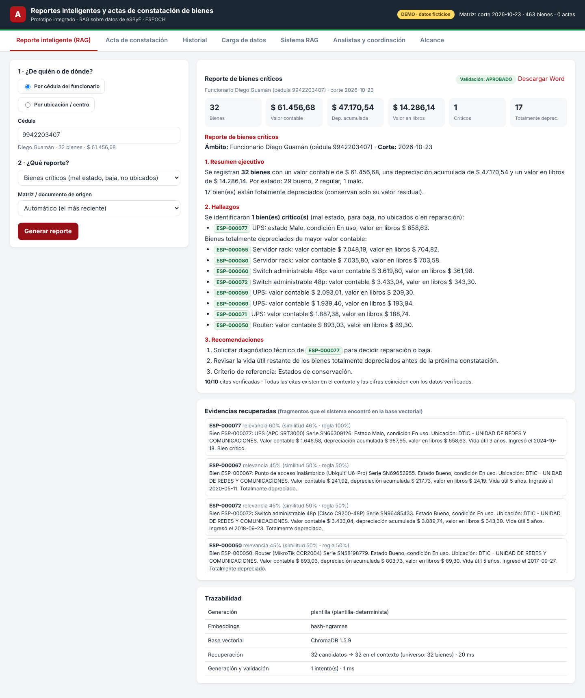
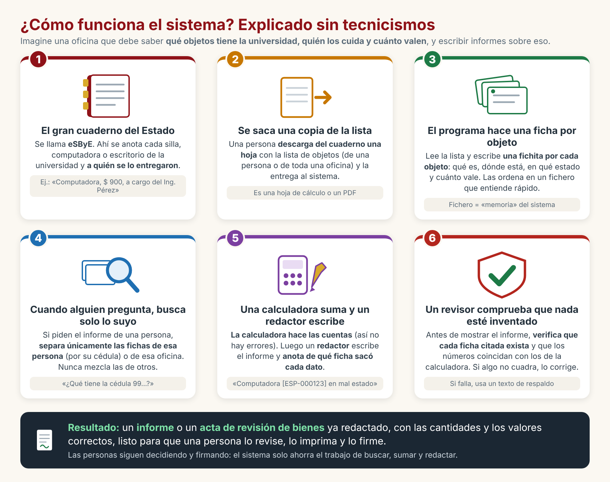
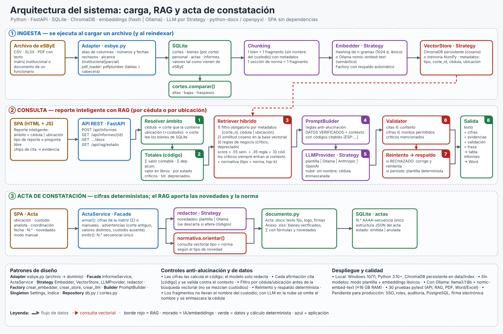
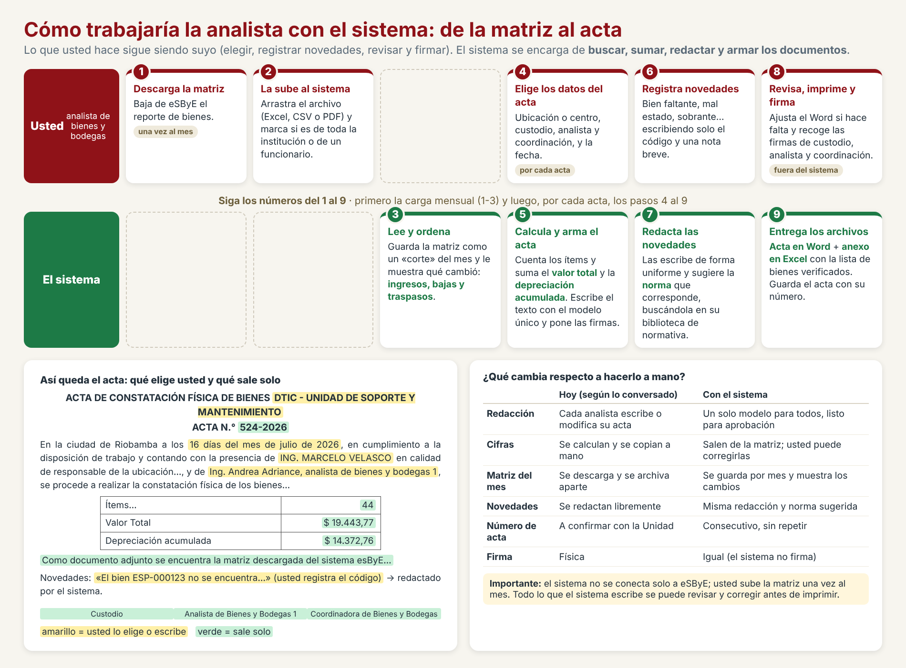

Tutor (Ing. Braulio). El sistema eSByE entrega documentos con los bienes registrados a nombre de una persona, que se buscan por la cédula. La entrada sería ese documento (PDF o CSV); a partir de él se cuantifican los datos y se genera un reporte totalizado de los activos existentes. Para ese reporte sí se emplearía RAG: carga y segmentación de la documentación, incrustaciones (embeddings) y base vectorial.
Unidad de Bienes y Bodegas (ingeniera). Que el acta de constatación física salga por defecto, con un solo modelo y con un clic, desde la matriz de eSByE (que cambia cada mes): el analista elige ubicación o centro, custodio y analista, registra las observaciones (bien faltante, mal estado…) y obtiene el acta con valor total, depreciación acumulada y firmas; también acepta el ingreso manual de los valores.
| Requerimiento | Origen | Estado | Cómo está resuelto / qué falta |
|---|---|---|---|
| Entrada por documento de eSByE, buscado por cédula | Tutor | Implementado | Carga de CSV, Excel y PDF; el reporte se pide por cédula (con lista de funcionarios) o por ubicación. El documento de una persona se carga como «parcial». |
| Entrada en PDF | Tutor | Parcial | Lee PDF con texto seleccionable y tablas (pdfplumber), y toma cédula y custodio de la cabecera. Probado solo con un PDF de ejemplo propio; el diseño real de eSByE no se verificó. No hay OCR (PDF escaneado). |
| Cuantificar los datos (totales) | Ambos | Implementado | Cálculo determinista: ítems, valor contable, depreciación acumulada, valor en libros, por estado, críticos y totalmente depreciados. |
| Reporte totalizado con RAG | Tutor | Implementado | Recuperación híbrida, texto con citas por bien, evidencias visibles, validación y respaldo. Consulta en lenguaje natural incluida. |
| Carga y segmentación | Tutor | Implementado | Un fragmento por bien (sin nombre del custodio) y uno por sección de normativa, con metadatos. |
| Incrustaciones y base vectorial | Tutor | Parcial | ChromaDB persistente (con respaldo en memoria). Los embeddings por defecto son léxicos (n-gramas); los semánticos requieren Ollama y no se probaron con un modelo real. |
| Acta de constatación por defecto, modelo único | Ingeniera | Implementado | Texto y estructura fijos que reproducen el acta de ejemplo (N.° 524-2026). El modelo definitivo debe validarlo la Unidad. |
| Elegir ubicación, custodio, analista; firmas | Ingeniera | Implementado | Listas desde la matriz y el catálogo de personal. |
| Matriz actualizada cada mes | Ingeniera | Parcial | Cortes mensuales con comparación (altas, bajas, traspasos). La carga es manual. |
| Valor total y depreciación (también manual) | Ingeniera | Implementado | De la matriz, corregibles o en modo manual, con aviso de diferencias. |
| Observaciones del analista | Ingeniera | Implementado | Seis tipos de novedad, redacción uniforme y norma sugerida recuperada con el mismo RAG. |
| Anexo con la matriz verificada | Ingeniera | Implementado | Excel con bienes, totales con fórmulas y novedades. |
| Obtener la matriz automáticamente de eSByE | Ingeniera | No incluido | Ver sección 4.1. |
| Firma electrónica, inicio de sesión, auditoría | Producción | No incluido | Ver sección 4.5. |




| Etapa de RAG | En este sistema |
|---|---|
| Carga y segmentación | Importación de CSV/Excel/PDF a SQLite; un fragmento por bien y por sección de norma. |
| Incrustaciones | Hashing de n-gramas (por defecto) u Ollama nomic-embed-text. |
| Base vectorial | ChromaDB persistente, con filtros por metadatos (corte, cédula, ubicación, tipo). |
| Recuperación | Filtro obligatorio por ámbito + similitud + reglas de negocio; los bienes críticos siempre entran al contexto. |
| Generación | Plantilla determinista (por defecto), Ollama, Anthropic u OpenAI-compatible. |
| Validación | Citas existentes, cifras iguales a las calculadas, críticos mencionados; reintento y respaldo. |
Dónde no interviene el RAG: el cálculo de totales y el texto fijo del acta (deben ser exactos y repetibles). Es una decisión de diseño, no una carencia.
No tuve acceso a eSByE (exige credenciales institucionales) y no encontré documentación pública de una API o de exportaciones programadas: el manual del módulo de Bienes describe reportes descargables en PDF, Excel o CSV. Opciones: A. carga manual mensual (hecha); B. carpeta vigilada que importe archivos nuevos (fácil, pendiente); C. acceso a datos mediante el MEF o la DTIC (requiere convenio; no puedo afirmar que exista); D. automatizar el navegador sobre eSByE (no recomendado: frágil, requiere guardar credenciales y puede contravenir condiciones de uso).
Las columnas del demo se tomaron de los campos que el manual público menciona como filtros del reporte «Institucional Bienes por Sector»; el manual no enumera las columnas de las exportaciones. Se necesita una matriz real y un documento real por cédula (CSV y, si el tutor insiste, PDF) para ajustar los alias, tipos, formatos numéricos y la forma en que viene la ubicación y la cabecera con la cédula.
El demo replica el ejemplo recibido. Falta confirmar encabezado oficial, copias, si el acta es por ubicación o por custodio, y la numeración oficial. La normativa es un resumen de apoyo (basado en el Acuerdo 067-CG-2018); se requieren los textos vigentes del reglamento de bienes, de la Contraloría y del reglamento interno de la ESPOCH, con artículos exactos.
Ollama, Anthropic y OpenAI se probaron únicamente con respuestas simuladas. No se midió la calidad de redacción ni de recuperación con un conjunto de preguntas de referencia (p. ej., RAGAS). Con los embeddings por defecto, la búsqueda coincide por palabras parecidas, no por significado. Se necesita un equipo con Ollama (≈ 16 GB de RAM) o una clave de API autorizada para evaluarlo, y un conjunto de consultas reales de los usuarios.
| Verificado (manuales públicos) | No verificado |
|---|---|
|
|
| Demo (un analista) | Producción institucional (sugerido) | |
|---|---|---|
| CPU / RAM | 2–4 núcleos · 4 GB (8 GB con ChromaDB) | 4 núcleos · 8 GB; 16 GB si hay modelo local |
| Disco | 2 GB (dependencias + índice) | 30 GB SSD + respaldos |
| Software | Windows 10/11, Python 3.10+, navegador actual | Servidor con PostgreSQL, base vectorial, proxy HTTPS y autenticación institucional |
| Modelos (opcional) | No requeridos (modo plantilla) | Ollama con llama3.1:8b y nomic-embed-text; GPU opcional |
Estimaciones; no consulté las especificaciones de su equipo ni de los servidores de la ESPOCH.
| Riesgo | Mitigación |
|---|---|
| El PDF real de eSByE no se lee bien | Preferir Excel/CSV (eSByE los exporta); ajustar el lector con un PDF real. |
| La matriz real tiene otras columnas | Diccionario de alias; informe de columnas sin usar y filas rechazadas. |
| El modelo inventa un dato | Cifras por código, citas validadas, reintento y respaldo determinista. |
| Se mezclan bienes de distintos custodios | Filtro por cédula/ubicación antes de la búsqueda vectorial (probado). |
| Datos personales expuestos | Alojamiento interno, control de acceso (pendiente), sin nombres en fragmentos ni envíos a la nube. |
| Texto del acta no alineado con la normativa vigente | Validación del modelo de acta por la Unidad y carga de normativa oficial. |
Para el tutor:
Para la Unidad de Bienes y Bodegas:
Este demo es independiente de los dos anteriores y no modifica el anteproyecto entregado. Si se adopta, habría que ajustar el problema (4.1), los requisitos funcionales (carga mensual por cortes, reporte por cédula y por ubicación, acta, anexo, novedades), el alcance, la arquitectura (base vectorial formal) y el temario.
Siguientes pasos sugeridos: (1) confirmar con el tutor y la Unidad el alcance conjunto; (2) probar con una matriz y un PDF reales; (3) evaluar el RAG con Ollama y un conjunto de consultas reales; (4) decidir entre carga manual o carpeta vigilada; (5) definir autenticación, roles y auditoría; (6) cargar la normativa oficial; (7) piloto con un analista durante un mes.